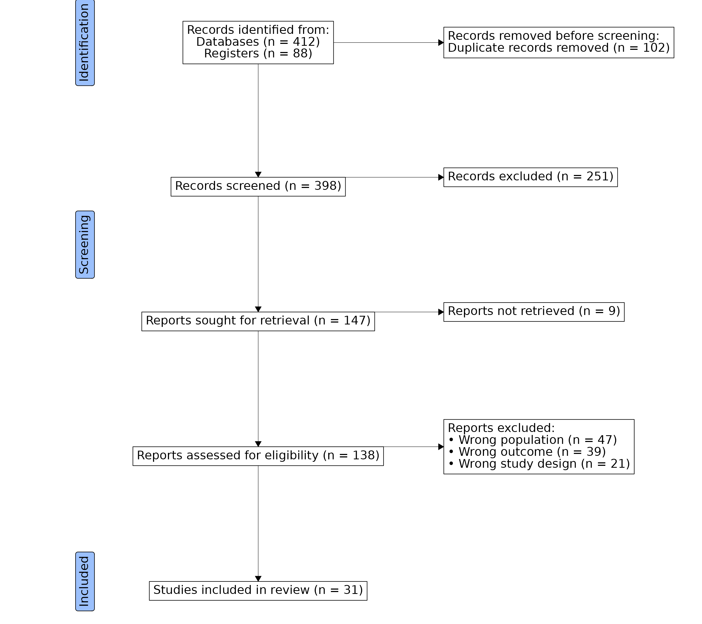

PRISMA flow diagrams document the flow of records through a systematic review, from identification through screening to the final set of included studies. Structurally they are close cousins of CONSORT diagrams, so the same two-stage ggconsort workflow applies: count cohorts while you wrangle the citation data, then lay out boxes and arrows.
This article builds a diagram in the style of the PRISMA 2020 statement for a hypothetical systematic review.
Citation data
In a real review, you would start from a data frame of citation records exported from your reference manager, with one row per record and columns that track each record’s fate. Here we simulate one.
library(ggconsort)
library(dplyr)
citations <- tibble(id = 1:500) %>%
mutate(
source = if_else(id <= 412, "Databases", "Registers"),
duplicate = id <= 102,
passed_screen = !duplicate & id > 353,
retrieved = passed_screen & id > 362,
exclusion_reason = case_when(
retrieved & id <= 409 ~ "Wrong population",
retrieved & id <= 448 ~ "Wrong outcome",
retrieved & id <= 469 ~ "Wrong study design",
TRUE ~ NA_character_
)
)
head(citations)
#> # A tibble: 6 × 6
#> id source duplicate passed_screen retrieved exclusion_reason
#> <int> <chr> <lgl> <lgl> <lgl> <chr>
#> 1 1 Databases TRUE FALSE FALSE NA
#> 2 2 Databases TRUE FALSE FALSE NA
#> 3 3 Databases TRUE FALSE FALSE NA
#> 4 4 Databases TRUE FALSE FALSE NA
#> 5 5 Databases TRUE FALSE FALSE NA
#> 6 6 Databases TRUE FALSE FALSE NAStage 1: count the cohorts
Each PRISMA box is a cohort. As in a CONSORT workflow,
cohort_define() derives each cohort from the full set of
records or from a previously defined cohort, and
anti_join() is a convenient way to count the records that
drop out at each step.
review_cohorts <-
citations %>%
cohort_start("Records identified") %>%
cohort_define(
from_databases = .full %>% filter(source == "Databases"),
from_registers = .full %>% filter(source == "Registers"),
screened = .full %>% filter(!duplicate),
duplicates = anti_join(.full, screened, by = "id"),
sought = screened %>% filter(passed_screen),
screened_out = anti_join(screened, sought, by = "id"),
assessed = sought %>% filter(retrieved),
not_retrieved = anti_join(sought, assessed, by = "id"),
included = assessed %>% filter(is.na(exclusion_reason)),
excluded_population = assessed %>% filter(exclusion_reason == "Wrong population"),
excluded_outcome = assessed %>% filter(exclusion_reason == "Wrong outcome"),
excluded_design = assessed %>% filter(exclusion_reason == "Wrong study design")
) %>%
cohort_label(
from_databases = "Databases",
from_registers = "Registers",
screened = "Records screened",
duplicates = "Duplicate records removed",
sought = "Reports sought for retrieval",
screened_out = "Records excluded",
assessed = "Reports assessed for eligibility",
not_retrieved = "Reports not retrieved",
included = "Studies included in review",
excluded_population = "Wrong population",
excluded_outcome = "Wrong outcome",
excluded_design = "Wrong study design"
)
review_cohorts
#> A ggconsort cohort of 500 observations with 12 cohorts:
#> - from_databases (412)
#> - from_registers (88)
#> - screened (398)
#> - duplicates (102)
#> - sought (147)
#> - screened_out (251)
#> - assessed (138)
#> - not_retrieved (9)
#> ...and 4 more.Stage 2: lay out the diagram
The main flow runs down the left at x = 0, with reasons
for attrition in boxes to the right. Multi-line labels are built with
<br> (labels are rendered by ggtext, so markdown and HTML
formatting work), and hjust = 0 left-aligns the boxes that
list several items so their text hangs together — this is the same
hjust/vjust override available for any
box.
review_prisma <- review_cohorts %>%
consort_box_add(
"identified", 0, 50,
glue::glue(
"Records identified from:<br>
{cohort_count_adorn(review_cohorts, from_databases)}<br>
{cohort_count_adorn(review_cohorts, from_registers)}"
)
) %>%
consort_box_add(
"duplicates", 30, 50,
glue::glue(
"Records removed before screening:<br>
{cohort_count_adorn(review_cohorts, duplicates)}"
),
hjust = 0
) %>%
consort_box_add(
"screened", 0, 40, cohort_count_adorn(review_cohorts, screened)
) %>%
consort_box_add(
"screened_out", 30, 40, cohort_count_adorn(review_cohorts, screened_out),
hjust = 0
) %>%
consort_box_add(
"sought", 0, 30, cohort_count_adorn(review_cohorts, sought)
) %>%
consort_box_add(
"not_retrieved", 30, 30, cohort_count_adorn(review_cohorts, not_retrieved),
hjust = 0
) %>%
consort_box_add(
"assessed", 0, 20, cohort_count_adorn(review_cohorts, assessed)
) %>%
consort_box_add(
"excluded", 30, 20,
glue::glue(
"Reports excluded:<br>
• {cohort_count_adorn(review_cohorts, excluded_population)}<br>
• {cohort_count_adorn(review_cohorts, excluded_outcome)}<br>
• {cohort_count_adorn(review_cohorts, excluded_design)}"
),
hjust = 0
) %>%
consort_box_add(
"included", 0, 10, cohort_count_adorn(review_cohorts, included)
) %>%
consort_arrow_add(
start = "identified", start_side = "bottom",
end = "screened", end_side = "top"
) %>%
consort_arrow_add(
start = "screened", start_side = "bottom",
end = "sought", end_side = "top"
) %>%
consort_arrow_add(
start = "sought", start_side = "bottom",
end = "assessed", end_side = "top"
) %>%
consort_arrow_add(
start = "assessed", start_side = "bottom",
end = "included", end_side = "top"
) %>%
consort_arrow_add(
start_x = 0, start_y = 50,
end = "duplicates", end_side = "left"
) %>%
consort_arrow_add(
start_x = 0, start_y = 40,
end = "screened_out", end_side = "left"
) %>%
consort_arrow_add(
start_x = 0, start_y = 30,
end = "not_retrieved", end_side = "left"
) %>%
consort_arrow_add(
start_x = 0, start_y = 20,
end = "excluded", end_side = "left"
)As with CONSORT diagrams, the PRISMA stage labels are ordinary ggplot
layers added on top of geom_consort(). Because the
left-aligned boxes extend to the right of their anchor points, we widen
the x range with xlim() to give them room.
library(ggplot2)
review_prisma %>%
ggplot() +
geom_consort() +
theme_consort(margin_h = 2, margin_v = 1) +
xlim(-32, 62) +
ggtext::geom_richtext(
aes(x = -28, y = y, label = label),
data = tibble(
y = c(50, 35, 10),
label = c("Identification", "Screening", "Included")
),
fill = "#9bc0fc", angle = 90
)
At analysis time, the included studies are one
cohort_pull() away:
review_cohorts %>%
cohort_pull(included)
#> # A tibble: 31 × 6
#> id source duplicate passed_screen retrieved exclusion_reason
#> <int> <chr> <lgl> <lgl> <lgl> <chr>
#> 1 470 Registers FALSE TRUE TRUE NA
#> 2 471 Registers FALSE TRUE TRUE NA
#> 3 472 Registers FALSE TRUE TRUE NA
#> 4 473 Registers FALSE TRUE TRUE NA
#> 5 474 Registers FALSE TRUE TRUE NA
#> 6 475 Registers FALSE TRUE TRUE NA
#> 7 476 Registers FALSE TRUE TRUE NA
#> 8 477 Registers FALSE TRUE TRUE NA
#> 9 478 Registers FALSE TRUE TRUE NA
#> 10 479 Registers FALSE TRUE TRUE NA
#> # ℹ 21 more rows